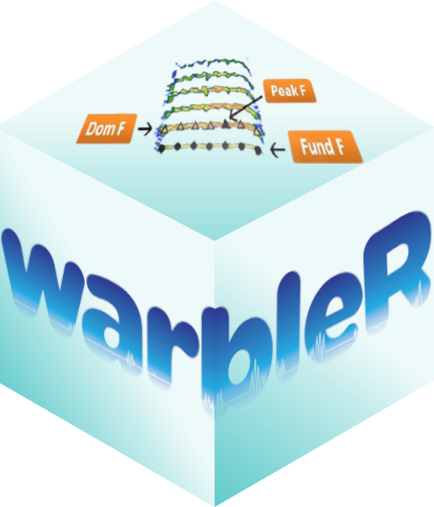

üåê Language
<div align="center">
<a href="https://openaitx.github.io/view.html?user=maRce10&project=warbleR&lang=en">English</a>
| <a href="https://openaitx.github.io/view.html?user=maRce10&project=warbleR&lang=zh-CN">简体中文</a>
| <a href="https://openaitx.github.io/view.html?user=maRce10&project=warbleR&lang=zh-TW">繁體中文</a>
| <a href="https://openaitx.github.io/view.html?user=maRce10&project=warbleR&lang=ja">日本語</a>
| <a href="https://openaitx.github.io/view.html?user=maRce10&project=warbleR&lang=ko">한국어</a>
| <a href="https://openaitx.github.io/view.html?user=maRce10&project=warbleR&lang=hi">हिन्दी</a>
| <a href="https://openaitx.github.io/view.html?user=maRce10&project=warbleR&lang=th">ไทย</a>
| <a href="https://openaitx.github.io/view.html?user=maRce10&project=warbleR&lang=fr">Français</a>
| <a href="https://openaitx.github.io/view.html?user=maRce10&project=warbleR&lang=de">Deutsch</a>
| <a href="https://openaitx.github.io/view.html?user=maRce10&project=warbleR&lang=es">Español</a>
| <a href="https://openaitx.github.io/view.html?user=maRce10&project=warbleR&lang=it">Italiano</a>
| <a href="https://openaitx.github.io/view.html?user=maRce10&project=warbleR&lang=ru">Русский</a>
| <a href="https://openaitx.github.io/view.html?user=maRce10&project=warbleR&lang=pt">Português</a>
| <a href="https://openaitx.github.io/view.html?user=maRce10&project=warbleR&lang=nl">Nederlands</a>
| <a href="https://openaitx.github.io/view.html?user=maRce10&project=warbleR&lang=pl">Polski</a>
| <a href="https://openaitx.github.io/view.html?user=maRce10&project=warbleR&lang=ar">العربية</a>
| <a href="https://openaitx.github.io/view.html?user=maRce10&project=warbleR&lang=fa">فارسی</a>
| <a href="https://openaitx.github.io/view.html?user=maRce10&project=warbleR&lang=tr">Türkçe</a>
| <a href="https://openaitx.github.io/view.html?user=maRce10&project=warbleR&lang=vi">Tiếng Việt</a>
| <a href="https://openaitx.github.io/view.html?user=maRce10&project=warbleR&lang=id">Bahasa Indonesia</a>
| <a href="https://openaitx.github.io/view.html?user=maRce10&project=warbleR&lang=as">অসমীয়া</
</div>
</div>
warbleR is intended to facilitate the analysis of the structure of animal acoustic signals in R. Users can collect open-access avian recordings or enter their own data into a workflow that facilitates spectrographic visualization and measurement of acoustic parameters. warbleR makes use of the fundamental sound analysis tools of the seewave package, and offers new tools for acoustic structure analysis. These tools are available for batch analysis of acoustic signals.
The main features of the package are:
- Diverse tools for measuring acoustic structure
- The use of loops to apply tasks through acoustic signals referenced in a selection table
- The production of images in the working directory with spectrograms to allow users organize data and verify acoustic analyses
The package offers functions to:
- Explore and download Xeno‐Canto recordings
- Explore, organize and manipulate multiple sound files
- Detect signals automatically (in frequency and time) (but check the R package ohun for a more thorough and friendly implementation)
- Create spectrograms of complete recordings or individual signals
- Run different measures of acoustic signal structure
- Evaluate the performance of measurement methods
- Catalog signals
- Characterize different structural levels in acoustic signals
- Statistical analysis of duet coordination
- Consolidate databases and annotation tables
Most of the functions allow the parallelization of tasks, which distributes the tasks among several processors to improve computational efficiency. Tools to evaluate the performance of the analysis at each step are also available.
Installing
Install/load the package from CRAN as follows:
install.packages("warbleR")
# load package
library(warbleR)To install the latest developmental version from github you will need the R package remotes:
Usage
The package includes several vignettes explaining its main features. The Intro to warbleR provides an overview of the package functionalities. The vignette Annotation data format gives a detailed description of the required format for input annotations. There are also three additional package vignettes with examples on how to organize functions in an acoustic analysis workflow.
A full description of the package (although a bit outdated) can be found in this journal article.
Other packages
The packages seewave and tuneR provide a huge variety of functions for acoustic analysis and manipulation. They moslty works on wave objects already imported into the R environment. The package baRulho focuses on quantifying habitat-induced degradation of acoustic signals with data inputs and ouputs similar to those of warbleR. The package Rraven facilitates the exchange of data between R and Raven sound analysis software (Cornell Lab of Ornithology) and can be very helpful for incorporating Raven as the annotating tool into acoustic analysis workflow in R. The package ohun works on automated detection of sound events, providing functions to diagnose and optimize detection routines. dynaSpec is allows to create dynamic spectrograms (i.e. spectrogram videos).
Citation
Please cite warbleR as follows:
Araya-Salas, M. and Smith-Vidaurre, G. (2017), warbleR: an r package to streamline analysis of animal acoustic signals. Methods Ecol Evol. 8, 184-191.
NOTE: please also cite the tuneR and seewave packages if you use any spectrogram-creating or acoustic-measuring functions